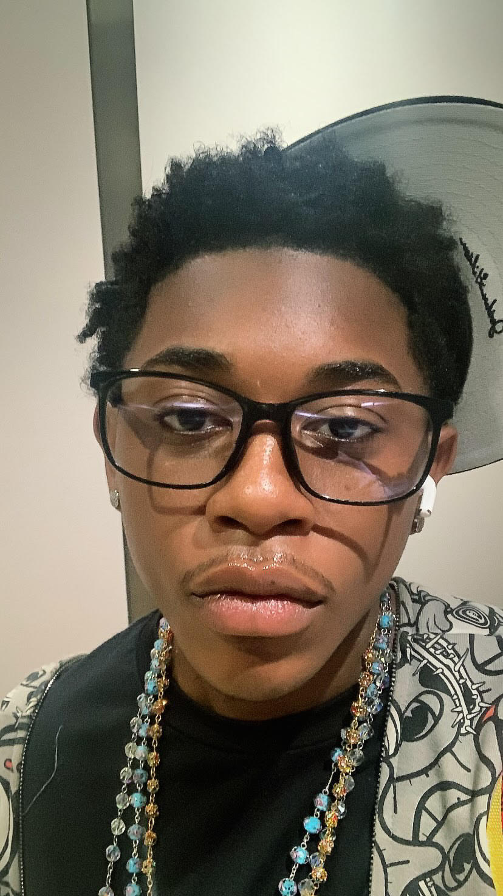

About Oblivious Streetwear
Oblivious Streetwear was created by Tadiwa Dhlamini, a current attending student of NC A&T majoring in Information Technology. Tadiwa's vision and creativity were meant to be shared and shown to the world. No matter how oblivious you act, you can't ignore his style.
At Oblivious Streetwear, we are passionate about designing fashion-forward streetwear for individuals who embrace their uniqueness and confidently express their authentic selves.
Our mission is to create high-quality, trendsetting clothing that not only makes people feel confident and comfortable but also serves as a canvas for bold, unapologetic attitudes and the pulse of modern street culture. We draw inspiration from the energy of the streets, art, and music, blending creativity and craftsmanship to produce standout pieces. Whether you're looking to make a statement or embrace subtle style, Oblivious Streetwear empowers you to wear your individuality with pride.